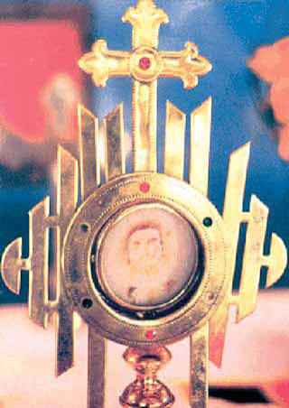
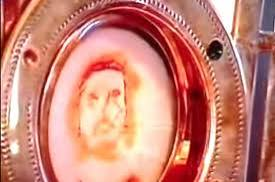

The 2001 Eucharistic Miracle of Chirattakonam occurred in Kerala, India. During public adoration, a consecrated Host revealed three dots before transforming into the clear image of Christ crowned with thorns. It was approved by the local Archbishop and is widely documented in Eucharistic exhibitions.
Local Recognition: His Beatitude Cyril Mar Baselice, the then-Archbishop of Trivandrum, verified the phenomenon, describing it as a powerful testament to the faithful's enduring beliefs in the Eucharist.
Legacy: The monstrance containing the miraculous Host is permanently housed for public veneration at St. Mary’s Church in Chirattakonam. This event remains one of the highlighted miracles in the globally traveling exhibitions of Blessed Carlo Acutis.